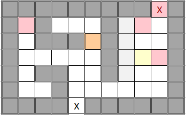
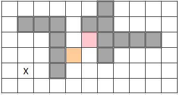

[⭐⭐⭐⭐] 24. Bűnüldözés (10 pont)
Az egyetemi könyvtárat bűnözők lepték el, akik elbújva a tömeg elől tervezgetik gonosz tervüket. Szerencsére az egyetem nem olyan rég bízott meg 2 ninját, hogy védjék az épületet. Az egyikük jelenleg is
az épületben tartózkodik.
A célja, hogy eliminálja az összes bűnözőt. Ezt úgy teszi, hogy az aktuális pozíciójától elindul, és mindig a legközelebbi bűnözőt eliminálja, aztán megy tovább megint a legközelebbire, és így tovább.
(Ha több bűnöző is egyforma közel van, akkor a tömbben elölrébb lévőt fogja választani.)
Amint eliminálta az összes bűnözőt, kimegy az épületből a legközelebbi ajtón. A kérdés az, hogy hány lépésre van szüksége ahhoz, hogy ezt meg tudja tenni.
A feladatát nehezíti, hogy az épület egyes részei nehezen megközelíthetőek, nyilván a falakat, könyvespolcokat és egyéb akadályokat ki kell kerülnie, tehát nem haladhat légvonalban. De mivel a teljes területet
jól ismeri, így ezt is be tudja kalkulálni az útvonal meghatározásakor.
Az alábbi adatokat ismerjük:
- startPozicio: innen indul a ninja
- bunozok: a bűnözők pozícióit tartalmazó tömb
- falak: a falak pozícióit tartalmazó tömb, nem járható
- konyvespolcok: a konyvespolcok pozícióit tartalmazó tömb, nem járható
- asztalok: az asztalok pozícióit tartalmazó tömb, nem járható
- ajtok: az ajtók pozícióit tartalmazó tömb, járható, az eliminálás után ezek közül kell a legközelebbin elhagyni az épületet
Valósítsd meg a lepesekSzama() metódust, hogy a szükséges lépések számát adja vissza. 1 lépésnek az számít, amíg a ninja megtesz egy mezőnyi távolságot. A ninja átlósan nem tud lépni,
csak balra, jobbra, előre vagy hátra.
A térkép koordinátarendszeréről nem ismerünk semmilyen adatot, illetve az épület méretét sem ismerjük. Az épület alakja lehet furcsa is, tehát lehetnek olyan részek, amik az ajtón kívül vannak,
mégis az épülethez tartoznak. Olyan is lehet, hogy az épületnek nincs fala, így tetszőleges távolságokba el lehet jutni, viszont ebben az esetben is az akció végén az ajtón kell elhagyni az épületet.
Példák:
Az ábrákon a sötétszürke a fal, világos szürke a könyvespolc, világos sárga az asztal, piros a bűnöző, narancssárga a játékos és X jelöli az ajtókat.

Itt először a játékos a bal oldali bűnözőt eliminálja (7 lépés), majd a jobb oldaliak közül a legalsót (14 lépés). Ezután a maradék kettő egyforma távol van egymástól, így
attól függ, hogy melyikük van elölrébb a tömbben. Ha az alsó, akkor őt eliminálja először (3 lépés), majd a felsőt (2 lépés), és mivel az ajtón van, így rögtön el tudja
hagyni az épületet (1 lépés). Összesen 7+14+3+2+1=27.

Itt először az egyetlen bűnözőt elimináljuk (2 lépés), majd elhagyjuk az épületet. 12 lépésben megkerülhetnénk a falat felülről, de inkább alulról megyünk (8 lépés,
az nem gond, hogy az ajtón kívülre kerültünk), majd még 1 lépésben elhagyjuk az épületet. Összesen 2+8+1=13.
Maximális futásidő: 10 s
Húha, ez fárasztó lesz!